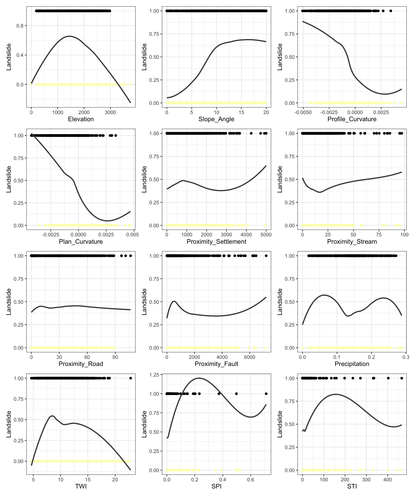
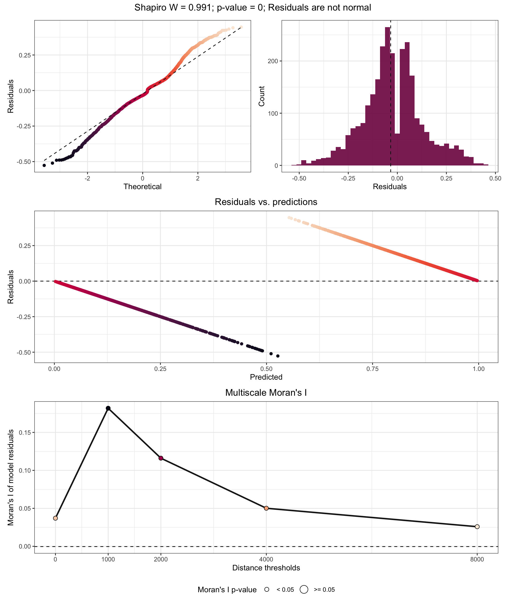
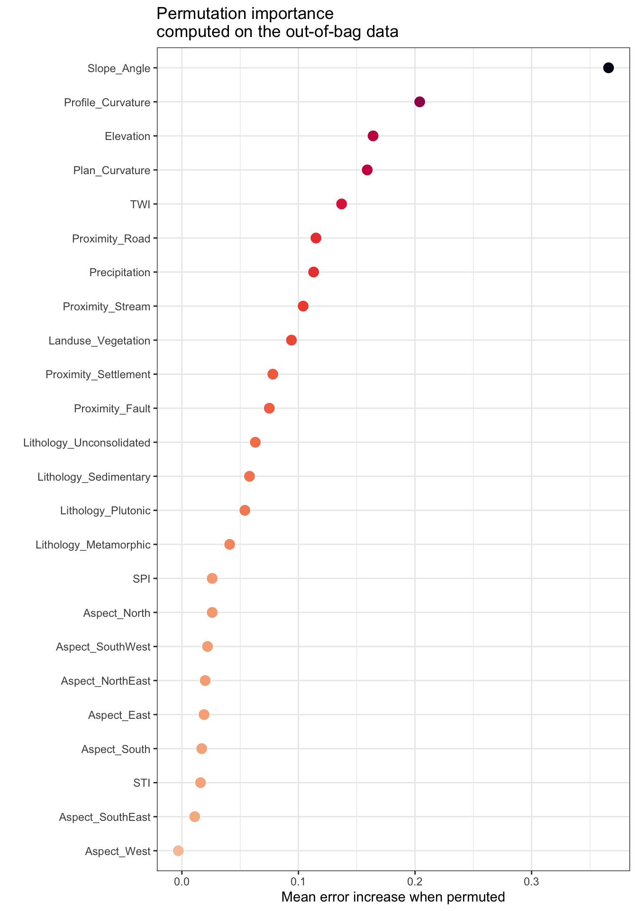
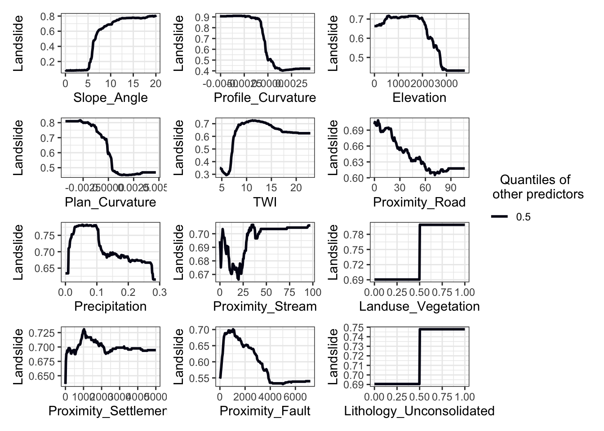
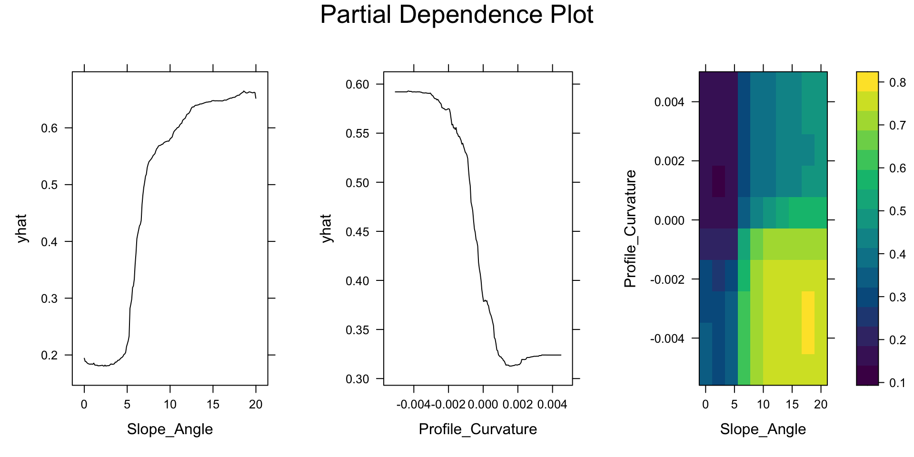
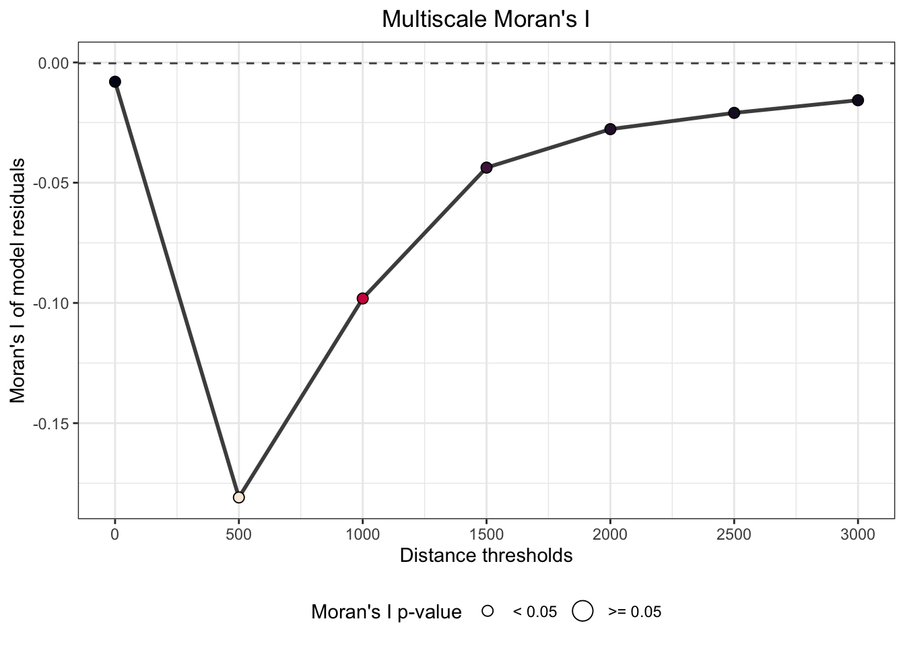
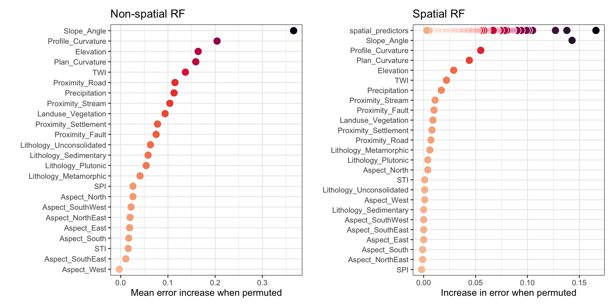
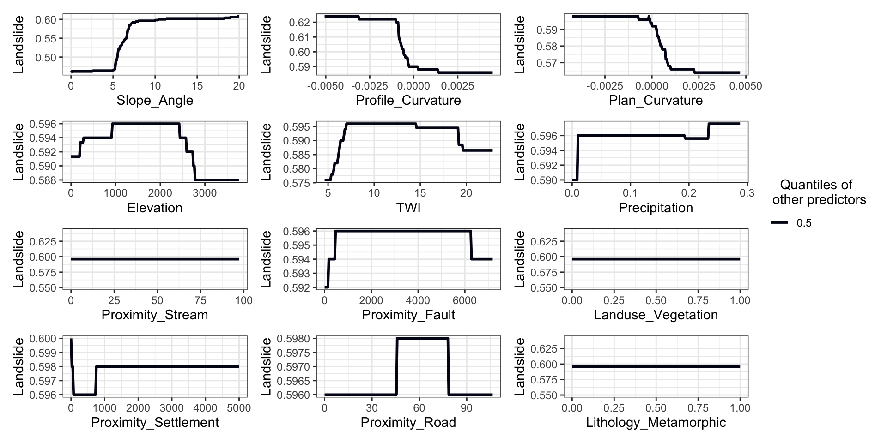

pacman::p_load(sf, sp, tmap, ggplot2, GWmodel, tidyverse, rsample, ranger, spatialRF, kableExtra, randomForestExplainer, pdp, dplyr, SpatialML)Machine Learning Modelling
R
sf
gwmodel
1.0 Import Packages
The package spatialRF facilitates fitting spatial regression models on regular or irregular data with Random Forest. It does so by generating spatial predictors that help the model “understand” the spatial structure of the training data with the end goal of minimizing the spatial autocorrelation of the model residuals and offering honest variable importance scores.
ls_data <- readRDS("data/rds/sample_Q6.rds")
#ls_data <- subset(ls_data, select = -Lithology_Unconsolidated)Test Train Split
set.seed(1243)
ls_split <- ls_data %>%
initial_split(prop = .2,
strata = Landslide)
training_data <- training(ls_split)
testing_data <- testing(ls_split)
dependent.variable.name <- "Landslide"
predictor.variable.names <- colnames(ls_data)[6:29]
xy <- training_data[, c("X", "Y")]
colnames(xy) <- c("x", "y")
training_data_sf <- st_as_sf(training_data, coords = c("X", "Y"))
testing_data_sf <- st_as_sf(testing_data, coords = c("X", "Y"))
training_data_sp <- as_Spatial(training_data_sf)
testing_data_sp <- as_Spatial(testing_data_sf)
distance_matrix <- gw.dist(dp.locat=
coordinates(training_data_sp))
distance.thresholds <- c(0, 1000, 2000, 4000, 8000)
random.seed <- 1The function plot_training_df_moran() helps create the scatterplots of the response variable (y axis) against each predictor (x axis).
spatialRF::plot_training_df(
data = training_data,
dependent.variable.name = dependent.variable.name,
predictor.variable.names = c("Elevation", "Slope_Angle", "Profile_Curvature", "Plan_Curvature", "Proximity_Settlement", "Proximity_Stream","Proximity_Road", "Proximity_Fault", "Precipitation", "TWI", "SPI", "STI"),
ncol = 3,
point.color = viridis::viridis(100, option = "A", direction = -1),
line.color = "gray30")
The function plot_training_df_moran() helps assessing the spatial autocorrelation of the response variable and the predictors across different distance thresholds. Low Moran’s I and p-values equal or larger than 0.05 indicate that there is no spatial autocorrelation for the given variable and distance threshold.
spatialRF::plot_training_df_moran(
data = training_data,
dependent.variable.name = dependent.variable.name,
predictor.variable.names = predictor.variable.names,
distance.matrix = distance_matrix,
distance.thresholds = distance.thresholds,
fill.color = viridis::viridis(
100,
option = "A",
direction = -1
),
point.color = "gray40"
)
Fitting a non-spatial Random Forest model
The function rf() is a convenient wrapper for ranger::ranger() used in every modelling function of the spatialRF package. It takes the training data, the names of the response and the predictors, and optionally (to assess the spatial autocorrelation of the residuals), the distance matrix, and a vector of distance thresholds (in the same units as the distances in distance_matrix).
non.spatial.rf <- spatialRF::rf(
data = training_data,
dependent.variable.name = dependent.variable.name,
predictor.variable.names = predictor.variable.names,
distance.matrix = distance_matrix,
distance.thresholds = distance.thresholds,
xy = xy,
seed = random.seed,
verbose = FALSE
)Residuals
The slot residuals (model.non.spatial$residuals) stores the values of the residuals and the results of the normality and spatial autocorrelation tests, and its content can be plotted with plot_residuals_diagnostics().
spatialRF::plot_residuals_diagnostics(
non.spatial.rf,
verbose = FALSE
)
The upper panels show the results of the normality test (interpretation in the title), the middle panel shows the relationship between the residuals and the fitted values, important to understand the behavior of the residuals, and the lower panel shows the Moran’s I of the residuals across distance thresholds and their respective p-values (positive for 0 and 1000 km).
Global variable importance
The slot importance (model.non.spatial$variable.importance) contains the variable importance scores. These can be plotted with plot_importance(), printed with print_importance(), and the dataframe retrieved with get_importance()
spatialRF::plot_importance(
non.spatial.rf,
verbose = FALSE
)
The package randomForestExplainer offers a couple of interesting options to deepen our understanding on variable importance scores. The first one is measure_importance(), which analyzes the forest to find out the average minimum tree depth at which each variable can be found (mean_min_depth), the number of nodes in which a variable was selected to make a split (no_of_nodes), the number of times the variable was selected as the first one to start a tree (times_a_root), and the probability of a variable to be in more nodes than what it would be expected by chance (p_value).
importance.df <- randomForestExplainer::measure_importance(
non.spatial.rf,
measures = c("mean_min_depth", "no_of_nodes", "times_a_root", "p_value")
)kableExtra::kbl(
importance.df %>%
dplyr::arrange(mean_min_depth) %>%
dplyr::mutate(p_value = round(p_value, 4)),
format = "html"
) %>%
kableExtra::kable_paper("hover", full_width = T)| variable | mean_min_depth | no_of_nodes | times_a_root | p_value |
|---|---|---|---|---|
| Slope_Angle | 1.838000 | 13675 | 82 | 0 |
| Profile_Curvature | 2.080000 | 12161 | 70 | 0 |
| Plan_Curvature | 2.218000 | 11717 | 56 | 0 |
| Elevation | 2.406000 | 11854 | 59 | 0 |
| TWI | 2.514000 | 11436 | 39 | 0 |
| Precipitation | 2.888000 | 10709 | 28 | 0 |
| Proximity_Stream | 3.166000 | 9586 | 14 | 0 |
| Proximity_Fault | 3.368000 | 10908 | 10 | 0 |
| Proximity_Settlement | 3.418000 | 10140 | 17 | 0 |
| Proximity_Road | 3.506000 | 10242 | 6 | 0 |
| Landuse_Vegetation | 3.808000 | 2106 | 51 | 1 |
| SPI | 3.982000 | 9473 | 2 | 0 |
| STI | 4.198000 | 8035 | 0 | 0 |
| Lithology_Sedimentary | 4.984324 | 1685 | 26 | 1 |
| Lithology_Plutonic | 5.424900 | 1121 | 20 | 1 |
| Lithology_Metamorphic | 6.020288 | 1866 | 8 | 1 |
| Lithology_Unconsolidated | 6.050288 | 2045 | 0 | 1 |
| Aspect_North | 6.636828 | 1390 | 8 | 1 |
| Aspect_SouthWest | 6.700396 | 1682 | 0 | 1 |
| Aspect_South | 6.816360 | 1725 | 4 | 1 |
| Aspect_SouthEast | 6.882432 | 1762 | 0 | 1 |
| Aspect_NorthEast | 7.090540 | 1532 | 0 | 1 |
| Aspect_West | 7.229044 | 1550 | 0 | 1 |
| Aspect_East | 7.296576 | 1510 | 0 | 1 |
Contribution of predictors to model transferability
The new function rf_importance() offers a way to assess to what extent each predictor contributes to model transferability (predictive ability on independent spatial folds measured with rf_evaluate(), see below). It does so by comparing the performance of the full model with models fitted without each one of the predictors. The difference in performance between the full model and a model without a given predictor represents the contribution of such predictor to model transferability.
non.spatial.rf <- spatialRF::rf_importance(
model = non.spatial.rf
)Partial dependence plot (PDP)
To understand and visualize how the model predictions are influenced by each predictor when all other predictors are being controlled, we can generate partial dependence plots (PDPs) of the predictors of the model. Partial dependence plots, introduced by Friedman (2001) (Friedman, 2001), is used to interpret the output of complex machine learning models. In PDPs, the Y-axis value (ŷ) is defined by the average of all of the possible model predictions when the value of the objective predictor is at X.
spatialRF::plot_response_curves(
non.spatial.rf,
quantiles = 0.5,
ncol = 3
)
pacman::p_load(grid,gridExtra)pdp_1 <- pdp::partial(
non.spatial.rf,
train = training_data,
pred.var = "Slope_Angle",
plot = TRUE,
grid.resolution = 200
)
pdp_2 <- pdp::partial(
non.spatial.rf,
train = training_data,
pred.var = "Profile_Curvature",
plot = TRUE,
grid.resolution = 200
)
pdp_1_2 <- pdp::partial(
non.spatial.rf,
train = training_data,
pred.var = c("Slope_Angle","Profile_Curvature"),
plot = TRUE,
grid.resolution = 10)grid.arrange(pdp_1,pdp_2,pdp_1_2,
ncol= 3,
top = textGrob("Partial Dependence Plot", gp=gpar(fontsize=20)))
Model Performance
The performance slot (in model.non.spatial$performance) contains the values of several performance measures. It be printed via the function print_performance().
R squared (oob)andRMSE (oob)are the R squared of the model and its root mean squared error when predicting the out-of-bag data (fraction of data not used to train individual trees). From all the values available in theperformanceslot, probably these the most honest ones, as it is the closer trying to get a performance estimate on independent data. However, out-of-bag data is not fully independent, and therefore will still be inflated, especially if the data is highly aggregated in space.R squaredandpseudo R squaredare computed from the observations and the predictions, and indicate to what extent model outcomes represent the input data. These values will usually be high the data is highly aggregated in space.The
RMSEand its normalized version are computed viaroot_mean_squared_error(), and are linear withR squaredandpseudo R squared.
spatialRF::print_performance(non.spatial.rf)
Model performance
- R squared (oob): 0.5446231
- R squared (cor(obs, pred)^2): 0.9355865
- Pseudo R squared (cor(obs, pred)):0.9672572
- RMSE (oob): 0.3342698
- RMSE: 0.1569
- Normalized RMSE: 0.1569Geographical Random Forest
“Geographical Weighted Random Forest (GWRF) or local RF model is a spatial analysis method using a local version of the Random Forest Regresson Model. It allows for the investigation of the existence of spatial non-stationarity, in the relationship between a dependent and a set of independent variables. The latter is possible by fitting a sub-model for each observation in space, taking into account the neighbouring observations. This technique adopts the idea of the Geographically Weighted Regression, Kalogirou (2003). The main difference between a tradition (linear) GWR and GRF is that we can model non-stationarity coupled with a flexible non-linear model which is very hard to overfit due to its bootstrapping nature, thus relaxing the assumptions of traditional Gaussian statistics. Essential it was designed to be a bridge between machine learning and geographical models, combining inferential and explanatory power. Additionally, it is suited for datasets with numerous predictors, due to the robust nature of the random forest algorithm in high dimensionality.”
Fitting a spatial model with rf_spatial()
spatial.rf <- spatialRF::rf_spatial(
model = non.spatial.rf,
method = "mem.moran.sequential",
verbose = FALSE,
seed = random.seed,
weight.r.squared = 0.5
)spatial.rf <- read_rds("data/rds/spatial_rf.rds")spatialRF::plot_moran(
non.spatial.rf,
verbose = FALSE
)
spatialRF::plot_moran(
spatial.rf,
verbose = FALSE
)
If we compare the variable importance plots of both models, we can see that the spatial model has an additional set of dots under the name “spatial_predictors”, and that the maximum importance of a few of these spatial predictors matches the importance of the most relevant non-spatial predictors.
p1 <- spatialRF::plot_importance(
non.spatial.rf,
verbose = FALSE) +
ggplot2::ggtitle("Non-spatial RF")
p2 <- spatialRF::plot_importance(
spatial.rf,
verbose = FALSE) +
ggplot2::ggtitle("Spatial RF")
p1 | p2 
kableExtra::kbl(
head(spatial.rf$importance$per.variable, n = 50),
format = "html"
) %>%
kableExtra::kable_paper("hover", full_width = F)| variable | importance |
|---|---|
| spatial_predictor_500_2 | 0.166 |
| Slope_Angle | 0.143 |
| spatial_predictor_500_4 | 0.138 |
| spatial_predictor_500_9 | 0.127 |
| spatial_predictor_500_5 | 0.105 |
| spatial_predictor_500_572 | 0.101 |
| spatial_predictor_500_575 | 0.099 |
| spatial_predictor_500_574 | 0.094 |
| spatial_predictor_500_37 | 0.090 |
| spatial_predictor_1000_28 | 0.086 |
| spatial_predictor_500_15 | 0.085 |
| spatial_predictor_500_22 | 0.084 |
| spatial_predictor_500_612 | 0.083 |
| spatial_predictor_500_632 | 0.082 |
| spatial_predictor_500_647 | 0.081 |
| spatial_predictor_1000_5 | 0.080 |
| spatial_predictor_500_641 | 0.078 |
| spatial_predictor_500_28 | 0.074 |
| spatial_predictor_500_7 | 0.074 |
| spatial_predictor_500_3 | 0.071 |
| spatial_predictor_500_88 | 0.070 |
| spatial_predictor_500_11 | 0.069 |
| spatial_predictor_500_555 | 0.069 |
| spatial_predictor_500_581 | 0.068 |
| spatial_predictor_500_540 | 0.068 |
| spatial_predictor_500_561 | 0.067 |
| spatial_predictor_500_6 | 0.061 |
| spatial_predictor_500_723 | 0.061 |
| spatial_predictor_500_698 | 0.060 |
| spatial_predictor_500_664 | 0.060 |
| spatial_predictor_500_538 | 0.059 |
| spatial_predictor_1000_4 | 0.059 |
| spatial_predictor_500_486 | 0.058 |
| spatial_predictor_500_90 | 0.058 |
| spatial_predictor_500_549 | 0.056 |
| Profile_Curvature | 0.055 |
| spatial_predictor_500_587 | 0.054 |
| spatial_predictor_500_653 | 0.054 |
| spatial_predictor_500_576 | 0.052 |
| spatial_predictor_500_558 | 0.051 |
| spatial_predictor_500_45 | 0.050 |
| spatial_predictor_500_603 | 0.050 |
| spatial_predictor_500_69 | 0.049 |
| spatial_predictor_500_263 | 0.049 |
| spatial_predictor_1000_17 | 0.048 |
| spatial_predictor_500_80 | 0.047 |
| spatial_predictor_500_25 | 0.047 |
| spatial_predictor_500_27 | 0.046 |
| spatial_predictor_500_600 | 0.045 |
| spatial_predictor_500_85 | 0.045 |
non.spatial.rf.eval <- rf_evaluate(
non.spatial.rf,
xy = xy,
metrics = "auc",
verbose = FALSE
)
print_evaluation(non.spatial.rf.eval)
Spatial evaluation
- Training fraction: 0.75
- Spatial folds: 30
Metric Median MAD Minimum Maximum
auc 0.893 0.015 0.872 0.922spatial.rf.eval <- rf_evaluate(
spatial.rf,
xy = xy,
metrics = "auc",
verbose = FALSE
)print_evaluation(spatial.rf.eval)
Spatial evaluation
- Training fraction: 0.75
- Spatial folds: 30
Metric Median MAD Minimum Maximum
auc 0.972 0.012 0.906 0.99spatialRF::plot_response_curves(
spatial.rf,
quantiles = 0.5,
ncol = 3
)
Using SpatialML
coords_train <- st_coordinates(training_data_sf)
coords_test <- st_coordinates(testing_data_sf)set.seed(1234)
rf <- ranger(Landslide ~ Elevation +
Aspect_North + Aspect_NorthEast +
Aspect_East + Aspect_SouthEast +
Aspect_South + Aspect_SouthWest +
Aspect_West + Profile_Curvature +
Plan_Curvature + Slope_Angle +
Lithology_Metamorphic +
Lithology_Sedimentary +
Lithology_Plutonic +
Lithology_Unconsolidated +
Proximity_Settlement +
Proximity_Stream +
Proximity_Road + Proximity_Fault +
Landuse_Vegetation + Precipitation +
TWI + SPI + STI,
data=training_data,
importance = "impurity")
rfRanger result
Call:
ranger(Landslide ~ Elevation + Aspect_North + Aspect_NorthEast + Aspect_East + Aspect_SouthEast + Aspect_South + Aspect_SouthWest + Aspect_West + Profile_Curvature + Plan_Curvature + Slope_Angle + Lithology_Metamorphic + Lithology_Sedimentary + Lithology_Plutonic + Lithology_Unconsolidated + Proximity_Settlement + Proximity_Stream + Proximity_Road + Proximity_Fault + Landuse_Vegetation + Precipitation + TWI + SPI + STI, data = training_data, importance = "impurity")
Type: Regression
Number of trees: 500
Sample size: 2803
Number of independent variables: 24
Mtry: 4
Target node size: 5
Variable importance mode: impurity
Splitrule: variance
OOB prediction error (MSE): 0.112023
R squared (OOB): 0.5434546 Note: permutations of bandwidth selection is done previously. Refer to the Data Preparation document to check the logs.
set.seed(1234)
grf.bw.260.orig <- grf.bw(Landslide ~ Elevation +
Aspect_North + Aspect_NorthEast +
Aspect_East + Aspect_SouthEast +
Aspect_South + Aspect_SouthWest +
Aspect_West + Profile_Curvature +
Plan_Curvature + Slope_Angle +
Lithology_Metamorphic +
Lithology_Sedimentary +
Lithology_Plutonic +
Lithology_Unconsolidated +
Proximity_Settlement +
Proximity_Stream +
Proximity_Road + Proximity_Fault +
Landuse_Vegetation + Precipitation +
TWI + SPI + STI,
data=training_data,
kernel="adaptive",
coords=coords_train,
bw.min = 260,
bw.max = 260,
step = 1,
trees= 500,
importance="impurity",
forests = FALSE,
geo.weighted = TRUE)write_rds(grf.bw.260.orig, "data/rds/gwRF.bw.260.orig.rds")
#grf.bw.100 <- read_rds("data/rds/grf.bw.100.rds")
grf.bw.260.orig$tested.bandwidthsset.seed(1234)
gwRF_adaptive <- grf(formula = Landslide ~ Elevation +
Aspect_North + Aspect_NorthEast +
Aspect_East + Aspect_SouthEast +
Aspect_South + Aspect_SouthWest +
Aspect_West + Profile_Curvature +
Plan_Curvature + Slope_Angle +
Lithology_Metamorphic +
Lithology_Sedimentary +
Lithology_Plutonic +
Lithology_Unconsolidated +
Proximity_Settlement +
Proximity_Stream +
Proximity_Road + Proximity_Fault +
Landuse_Vegetation + Precipitation +
TWI + SPI + STI,
dframe=training_data,
bw=260,
kernel="adaptive",
coords=coords_train)#write_rds(gwRF_adaptive, "data/rds/gwRF_adaptive_260.rds")
gwRF_adaptive <- read_rds("data/rds/gwRF_adaptive_260.rds")gwRF_pred_260 <- predict.grf(gwRF_adaptive,
testing_data,
x.var.name=predictor.variable.names,
y.var.name=dependent.variable.name,
local.w=0.5,
global.w=0.5)write_rds(gwRF_pred_260, "data/rds/gwRF_pred_260.rds")gwRF_pred_260_df <- as.data.frame(gwRF_pred_260)testing_data_pred <- cbind(testing_data, gwRF_pred_260_df)rmse(testing_data_pred$Landslide,
testing_data_pred$gwRF_pred_260)